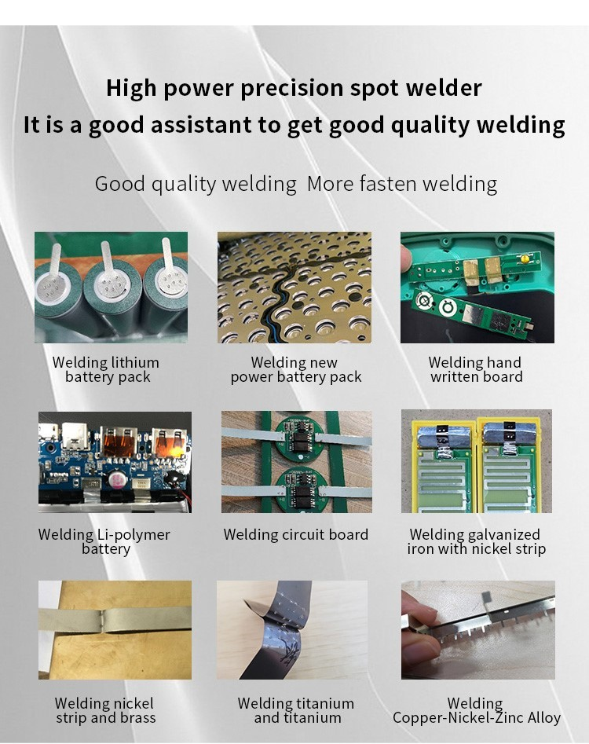
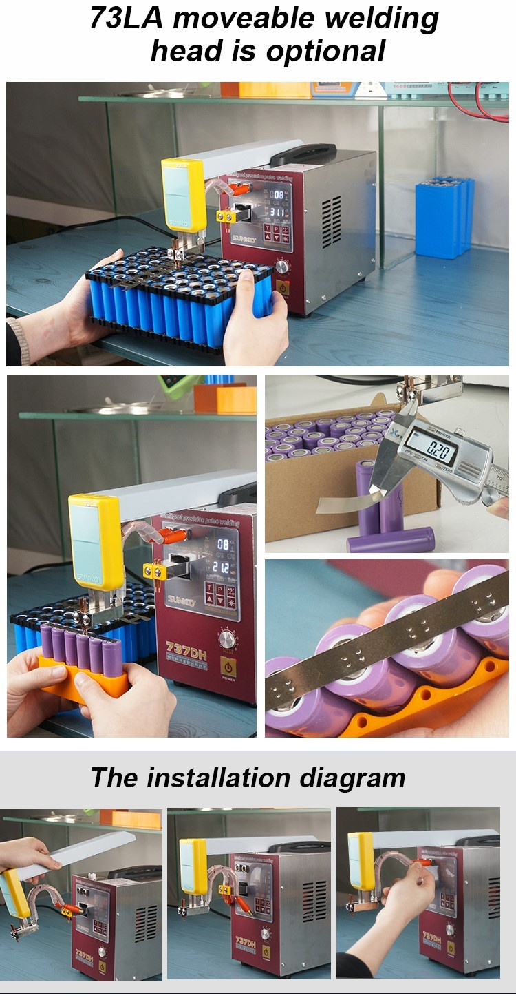
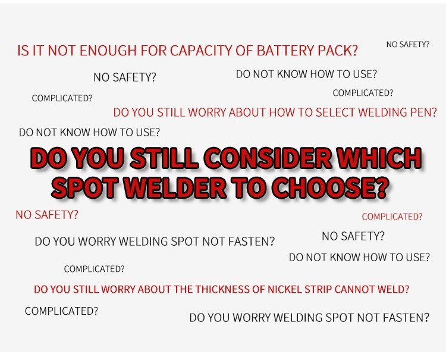
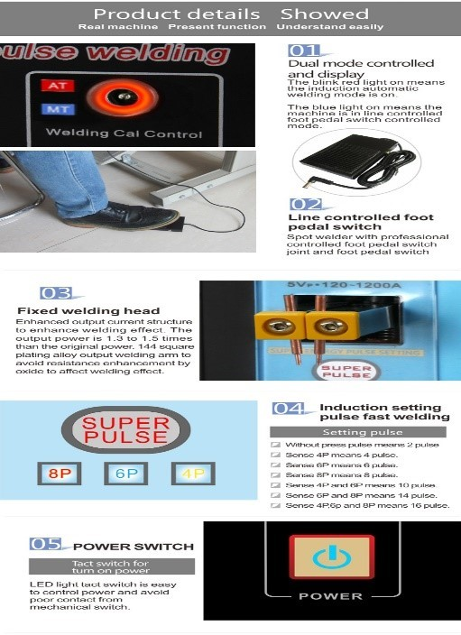
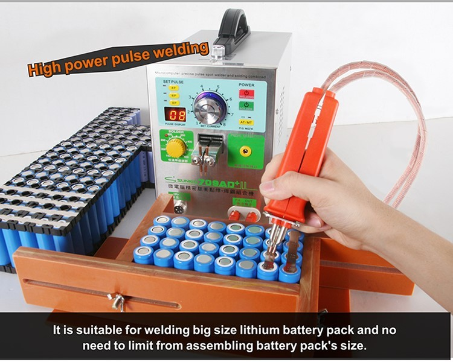

Introduction
Battery plants play a crucial role in the production of batteries for various industries, including automotive, electronics, and renewable energy. One of the key processes involved in battery manufacturing is welding. Welding machines are used to join different battery components, such as cells and terminals, ensuring the integrity and reliability of the battery packs. In recent years, portable welding machine solutions have emerged as a game-changer in battery plant operations. Let's explore the benefits and applications of these innovative tools.
How Portable Welding Solutions Work
Portable welding machines are essential tools in battery plants, enabling efficient and precise welding processes. These machines typically operate using a combination of electrical power and advanced control systems. When a portable welding machine is activated, it generates an electric current that flows through the welding electrode. The electrode, often made of copper alloy, comes into contact with the battery components that need to be welded, such as cells and terminals. The electrical current creates intense heat, causing the materials to melt and fuse together, forming a strong and reliable weld joint. Portable welding machines also incorporate features like adjustable power settings, pulse welding capabilities, and real-time monitoring, allowing operators to customize welding parameters and ensure consistent and high-quality welds. Overall, portable welding machines facilitate efficient and accurate welding operations in battery plants, contributing to the production of robust and reliable battery packs.

The Parameters that affect the process
The process of portable welding machines in a battery plant is influenced by several key parameters that determine the quality and efficiency of the welding. Firstly, the welding current plays a crucial role in controlling the heat input during the welding process. Adjusting the welding current allows operators to achieve the desired fusion and penetration depth. Secondly, the welding time or duration of the current flow affects the strength of the weld joint. Sufficient welding time ensures proper bonding of the battery components. Additionally, electrode pressure or force applied during welding affects the contact between the electrode and the materials being welded, impacting the overall weld quality. Furthermore, the choice of electrode material, its shape, and surface condition can influence the heat transfer and electrode life. Finally, environmental factors such as ambient temperature and humidity may also affect the welding process and require consideration. By carefully adjusting and optimizing these parameters, operators can ensure consistent and high-quality welds in battery plants using portable welding machines.
Basic Principles
Portable welding machines used in battery plants operate on basic principles to enable efficient and reliable welding processes. These machines employ an electrical power source, typically in the form of direct current (DC), to generate an electric arc that produces the heat necessary for welding. The welding circuit consists of the power source, cables, and welding electrode. When the welding machine is activated, a high current flow through the electrode, creating an arc between the electrode and the battery components to be welded. This arc generates intense heat, melting the materials and allowing them to fuse together. The electrode, made of a conductive material like copper alloy, serves as a consumable filler material, adding necessary material to the weld joint. The welding machine also incorporates controls and adjustments for parameters such as welding current, voltage, and welding speed, providing operators with flexibility and precision. By following these basic principles, portable welding machines facilitate the creation of strong and durable welds in battery plants, ensuring the integrity and reliability of battery packs.

Benefits of The Machines
Portable welding machines offer numerous benefits in battery plants, enhancing productivity, efficiency, and overall welding operations. Firstly, their portability allows for on-site welding, eliminating the need to transport batteries to a fixed welding station. This saves time and enables a streamlined workflow. Secondly, portable welding machines are versatile and can be easily adjusted to accommodate different battery sizes, chemistries, and welding requirements. This flexibility ensures compatibility with various battery production lines. Additionally, these machines provide precise control over welding parameters, enabling operators to achieve consistent and high-quality welds, critical for battery integrity and performance. The mobility of portable welding machines also promotes ergonomic work practices, reducing operator fatigue and increasing safety. Finally, by optimizing welding processes and minimizing downtime, portable welding machines contribute to increased efficiency and productivity in battery plants. Overall, their benefits include improved flexibility, versatility, precision, safety, and efficiency, making them indispensable tools for welding operations in battery manufacturing.

Semco R&D solutions for Portable Welding Machines
SEMCO offers a wide range of R&D solutions that cater to the needs of battery plant owners. Here are some of their notable products:
Battery Spot Welder Combined with Solder (SI HWN 709AD+): This innovative device combines spot welding and soldering capabilities, allowing for efficient and reliable bonding of battery components.

Battery Spot Welder (SI HWN 737G+): This spot welder is designed specifically for battery manufacturing, ensuring precise and consistent welding of battery cells and terminals.
Intelligent Time-Delay Battery Spot Welder (SI HWN 737H): This advanced spot welder features intelligent time-delay functions, optimizing the welding process and enhancing the quality of battery pack assembly.
Battery Spot Welder with Charger Station (SI HWN 737U): Combining a spot welder and a charging station, this product streamlines battery assembly processes by providing both welding and charging capabilities in one unit.
Battery Spot Welder Combined with Charging Station (SI HWN 788S-Pro): This high-performance spot welder integrates a charging station, enabling efficient welding and subsequent charging of battery packs.
Energy Storage Pulse Spot Welder with Voltage Measuring Pen (SI HWN 801A+): This specialized spot welder features a voltage measuring pen, ensuring accurate voltage monitoring during the welding process.

Energy Storage Pulse Spot Welder (SI HWN 801B): Designed for energy storage applications, this spot welder offers precise pulse welding for improved efficiency and performance.
Battery Spot Welder with Charging Station (SI HWN 788H-USB): This versatile spot welder includes a charging station and USB connectivity, providing convenience and flexibility for battery production.
Battery Spot Welder with Adjustable Telescopic Arm (SI HWN 738AL): Featuring an adjustable telescopic arm, this spot welder offers enhanced reach and flexibility for welding battery components in various sizes.
Soldering Station (SI SS95OT PRO): This high-quality soldering station ensures precise soldering of battery components, enabling secure and reliable connections.
Welding Pen and Needles (SI WPN 73B): These welding pens and needles are designed for intricate spot-welding tasks, allowing for precise and detailed welds in battery assembly.
Welding Pen and Welding Needles (SI WPN 70BN): These welding accessories provide excellent conductivity and precise control for spot welding applications in battery manufacturing.
How to use
To effectively utilize R&D solutions for portable welding machines in battery plants, follow these key steps. Firstly, thoroughly familiarize yourself with the specific product and its user manual to understand its features and capabilities. Next, assess the welding requirements of your battery components and select the appropriate welding machine from Aftersales R&D range of solutions. Set up the welding machine according to the manufacturer's instructions, ensuring proper connections, power supply, and calibration of welding parameters Prioritize safety by wearing appropriate personal protective equipment (PPE) and ensuring a well-ventilated workspace. Position the battery components securely and accurately, ensuring proper alignment and contact with the electrodes. Start the welding process, applying the necessary pressure and monitoring the welding parameters closely. Regularly inspect the welds for quality and integrity, making any adjustments as needed. Finally, adhere to regular maintenance and calibration schedules to ensure the longevity and optimal performance of the welding machine. By following these guidelines, you can maximize the benefits of Aftersales R&D solutions for portable welding machines and achieve efficient and reliable welds in battery plant operations.
Conclusion:
Portable welding machine solutions have revolutionized battery plant operations by providing enhanced flexibility, improved efficiency, and high-quality welds. Their mobility, precision, and safety features make them an invaluable tool in the production of batteries for diverse industries. As battery technology continues to evolve, portable welding machines will play a crucial role in meeting the growing demand for efficient and reliable battery manufacturing processes.
Got the solution to your battery worries then what are you waiting for book a live demo and operate your battery plant without any hassles and tensions. If you liked our newsletter then do not forget to share and comment and stay tuned for our next Newsletter on “Aftersales battery balancer and equalizer solutions”. Till then “Happy Batteries”.